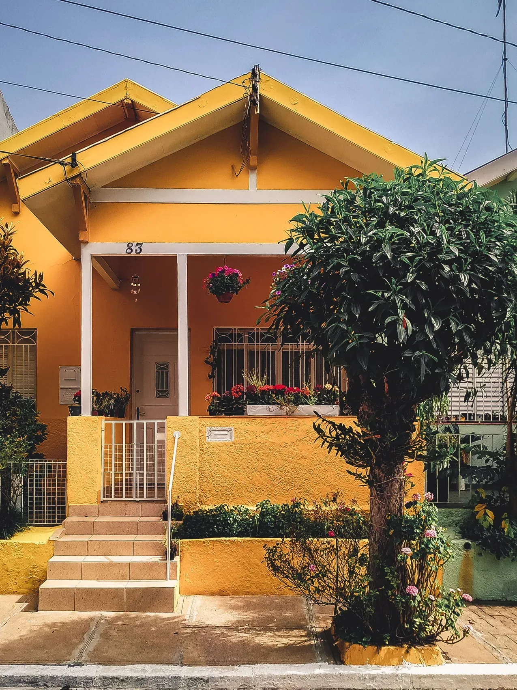

MINHA CASA, MINHA VIDA / INFORMAÇÃO PARA COMEÇAR.
A primeira chave.
Uma vida de histórias.
O Minha Casa, Minha Vida é um programa habitacional federal. As condições variam conforme a legislação vigente e a análise da operação. Por isso, informação oficial vem antes de qualquer expectativa.
CONSULTE O PROGRAMA OFICIAL ↗A VIVA Prime é uma marca fictícia e não tem vínculo institucional com o programa. Não informamos faixas de renda, juros, subsídios ou critérios que possam estar desatualizados.

FOTO DE REFERÊNCIA • SEM ENQUADRAMENTO VERIFICADOPOSSIBILIDADES A ANALISAR, NÃO APROVAÇÕES.
Um espaço para
planejar o começo.
Exemplos de anúncios sinalizados para
uma eventual consulta de enquadramento.
Não representam ofertas elegíveis confirmadas.
UMA CONVERSA SEM PROMESSAS.
Informação também
abre portas.
Estes imóveis estão oficialmente enquadrados?
Não. Os cadastros são fictícios. A sinalização indica apenas uma possibilidade para uma futura análise, não aprovação ou elegibilidade do imóvel.
Posso simular subsídio ou aprovação aqui?
Não. A elegibilidade depende das regras vigentes, da análise financeira e das condições da operação. Consulte os canais oficiais e a instituição financeira responsável.
Preciso enviar documentos pessoais?
Não. Esta demo não solicita CPF, documentos ou comprovantes de renda. Os formulários geram apenas prévias locais de interesse e devem ser preenchidos com dados fictícios.
Onde encontro as informações atualizadas?
Consulte o Ministério das Cidades pelo link oficial desta página e os canais oficiais da instituição financeira. As regras podem mudar.